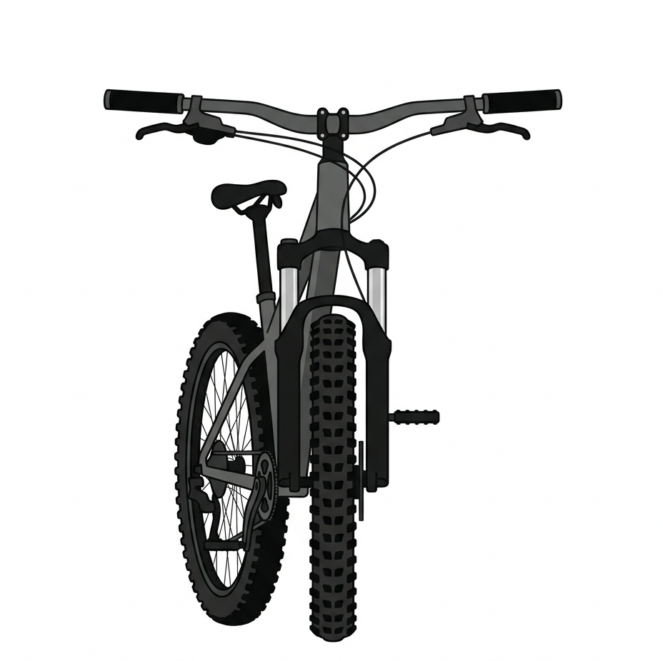
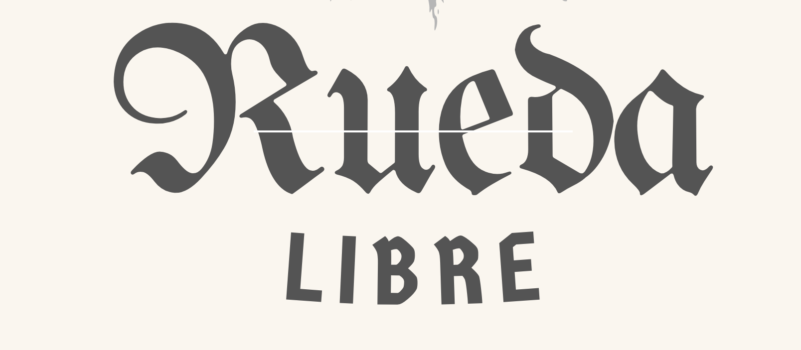
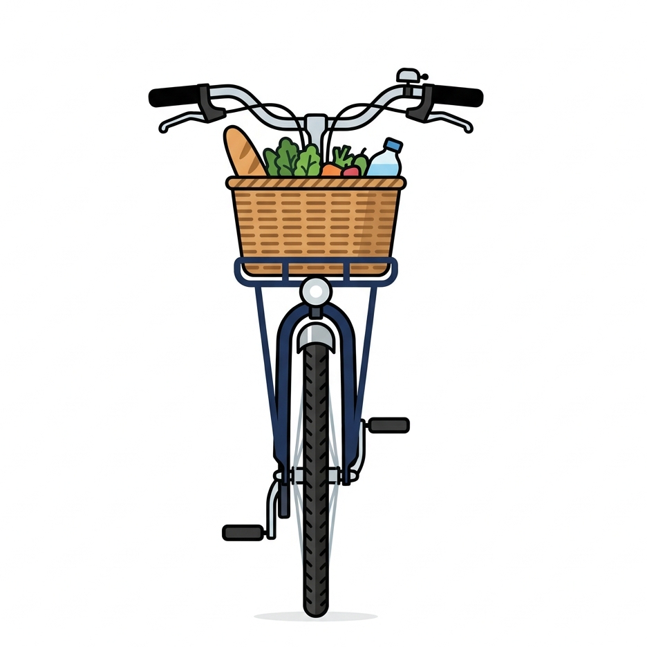
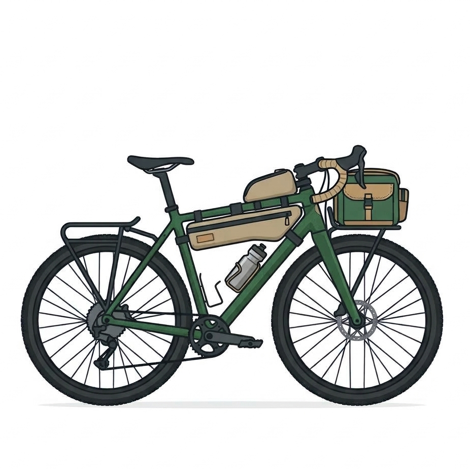

Alquiler de bicicletas
Urbanas, de montaña y eléctricas, por hora, medio día o día completo. Incluye casco y candado.

Alquilamos bicicletas y organizamos recorridos guiados para que conozcas Medellín a tu ritmo. Visítanos en nuestra sede: mira cómo encontrarnos.

Somos un emprendimiento de Medellín comprometido con la movilidad sostenible. Queremos que montar en bicicleta sea un plan para disfrutar, no una complicación.

Urbanas, de montaña y eléctricas, por hora, medio día o día completo. Incluye casco y candado.

Rutas por parques, barrios y montaña, para todos los niveles. Salen los sábados y domingos a las 7:00 a. m.
Nuevo
Ajustamos frenos, cadena y llantas mientras esperas. Revisión gratis con cada alquiler.
Tenemos sedes en diferentes zonas de Medellín.